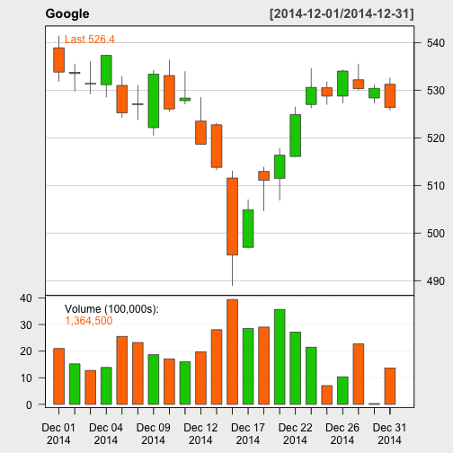

- This app plots the stock market prices and market index over time
- It obtains the stock data from yahoo finance
- The plots display 3 Candlestick Charts (2 on stock information and 1 on market index) over a defined time period
junkal
library(quantmod)
## Warning: package 'quantmod' was built under R version 3.1.2
## Loading required package: xts
## Warning: package 'xts' was built under R version 3.1.2
## Loading required package: zoo
##
## Attaching package: 'zoo'
##
## The following objects are masked from 'package:base':
##
## as.Date, as.Date.numeric
##
## Loading required package: TTR
## Warning: package 'TTR' was built under R version 3.1.2
## Version 0.4-0 included new data defaults. See ?getSymbols.
plotData<-getSymbols("GOOG", from="2014/12/01", to="2015/01/01", auto.assign=FALSE)
## As of 0.4-0, 'getSymbols' uses env=parent.frame() and
## auto.assign=TRUE by default.
##
## This behavior will be phased out in 0.5-0 when the call will
## default to use auto.assign=FALSE. getOption("getSymbols.env") and
## getOptions("getSymbols.auto.assign") are now checked for alternate defaults
##
## This message is shown once per session and may be disabled by setting
## options("getSymbols.warning4.0"=FALSE). See ?getSymbol for more details
chartSeries(plotData, type = 'candlesticks', name="Google")
